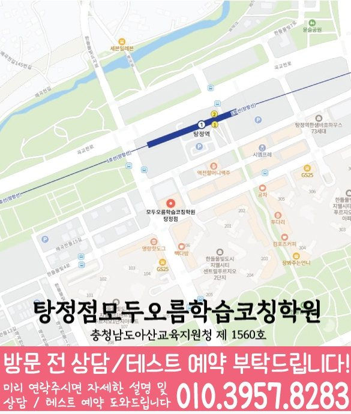

탕정 학원 수업 안내


지역 학원 안내
탕정의 상담 참고 지점은 탕정점입니다. 실제 방문 주소와 과목별 개설 자료를 확인한 뒤 학생의 학년과 필요한 과목에 맞는 안내를 선택하세요.
선생님의 지도 방향을 읽고, 학생이 원하는 도움을 상담 질문으로 준비해 보세요. 담당 과목·학년은 지점에서 확인할 수 있습니다.
동네·과목·학년 안내
영어 내신 대비는 고1까지로 안내되어 있습니다. 고2는 내신·수능 등 필요한 과정과 실제 지도 범위를 먼저 확인해 주세요.
기하는 수업 범위에서 제외되어 있습니다. 미적분·확률과 통계 등 희망 과목을 알려 주세요.
개설 학년은 제공된 지점 자료 기준이며 현재 모집 여부를 뜻하지 않습니다. 모집 요일·시간표·학생 진도에 맞는 수업 가능 여부는 등록 전에 지점에 확인하세요.
먼저 학생의 학년과 필요한 과목을 정하세요. 과목별 개설 자료를 따로 확인하고, 현재 교재와 가능한 등원 요일을 준비하세요.
연화초등학교 · 한들물빛초등학교
설화중학교 · 아산갈산중학교 · 아산배방중학교 · 아산세교중학교 · 탕정중학교 · 한들물빛중학교
설화고등학교 · 이순신고등학교
학교명은 제공된 타깃학교 자료의 참고 목록입니다. 학교별 전용반이나 현재 모집을 뜻하지 않으며, 진도·평가 범위는 학생이 가져온 최신 자료로 확인하세요.
안내 검토일

탕정에서는 탕정점의 자료를 참고합니다. 학생의 현재 학년부터 고르고, 영어와 수학의 개설 학년이 같은지 따로 확인하세요. 학교 이름이나 동네 이름만으로 별도 지점이나 전용반을 추정하지 마세요.
충남 아산시 탕정면 한들물빛5로 5 605호 모두오름학습코칭학원
와와학습코칭센터 탕정점(모두) 위치는 (충남 아산시 탕정면 한들물빛5로 5 605호 모두오름학습코칭학원)입니다. 스타벅스 건물 뒷 건물 , 롯데리아 건물
학교 목록은 탕정의 타깃학교 참고 자료이며 전용반이나 현재 모집을 뜻하지 않습니다.
센터 제공 교습비 링크 자료를 확인할 수 있습니다. 실제 개설 과목·횟수·금액은 상담 시 최종 확인해 주세요.
영어 기재 학년: 초1 · 초2 · 초3 · 초4 · 초5 · 초6 / 수학 기재 학년: 초1 · 초2 · 초3 · 초4 · 초5 · 초6.
영어 기재 학년: 중1 · 중2 · 중3 / 수학 기재 학년: 중1 · 중2 · 중3.
영어 기재 학년: 고1 · 고2 / 수학 기재 학년: 고1 · 고2 · 고3.
현재 학년과 필요한 과목을 함께 대조해 다음 안내를 선택하세요. 미기재는 현재 수업 불가를 뜻하지 않으며, 별도 확인 조건과 현재 모집 여부는 지점에서 확인해야 합니다.
탕정의 참고 지점은 탕정점입니다. 동네 이름은 별도 지점이나 수업 장소를 뜻하지 않으므로 실제 주소를 기준으로 방문을 준비하세요.
학생의 학년과 필요한 과목을 먼저 정하세요. 탕정점 자료에서 영어와 수학의 개설 학년을 각각 확인하고 초등·중등·고등 비교 안내를 선택할 수 있습니다. 한 과목의 기재 학년으로 다른 과목의 개설을 판단하지 마세요.
영어는 읽거나 쓴 답안에서 근거를 설명하지 못한 부분, 수학은 첫 식과 계산 중 멈춘 부분을 따로 표시하세요. 두 과목의 최근 기록과 공부할 수 있는 시간을 비교해 먼저 확인할 과목과 다음 복습 날짜를 정하세요.
탕정 타깃학교 참고 자료에 기재된 학교명은 연화초등학교 · 한들물빛초등학교 · 설화중학교 · 아산갈산중학교 · 아산배방중학교 · 아산세교중학교 · 탕정중학교 · 한들물빛중학교 · 설화고등학교 · 이순신고등학교입니다. 학교명은 상담 참고 목록입니다. 전용반·현재 모집·학교별 수업 가능 여부를 뜻하지 않습니다. 재학 학교의 최신 교재와 평가 안내로 진도와 범위를 확인하세요.
영어 내신 대비는 고1까지로 안내되어 있습니다. 고2는 내신·수능 등 필요한 과정과 실제 지도 범위를 먼저 확인해 주세요. 기하는 수업 범위에서 제외되어 있습니다. 미적분·확률과 통계 등 희망 과목을 알려 주세요. 이 조건과 학생의 학교·학년·이수 과목이 맞는지 지점에 확인하세요.
주소는 충남 아산시 탕정면 한들물빛5로 5 605호 모두오름학습코칭학원입니다. 페이지의 교습비 자료 링크에서 제공 문서를 확인하세요. 과목·횟수·기간과 추가 비용 여부를 구분해 상담 답변을 기록하고 방문 시간도 확인하세요.
다음 안내를 읽은 뒤 남은 질문을 구분하면 같은 정보를 여러 페이지에서 다시 찾는 일을 줄일 수 있습니다.
지역 학습 페이지
탕정 안에서 학년별 영어·수학 관리 페이지를 깔끔하게 비교할 수 있도록 정리했습니다.
같은 지역에서 함께 확인하기